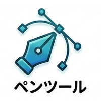
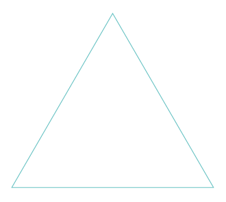
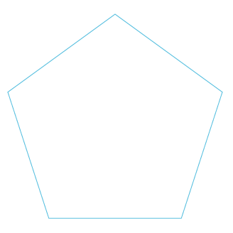
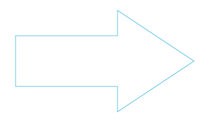

ペンツール練習用トレース素材（20個）

- プロンプト例
ペンツール練習用トレース素材（20個）
【レベル1】直線練習
目的：アンカーポイントに慣れる
- 三角形
- 五角形
- 星
- 矢印



ポイント
- クリックのみ
- ドラッグしない
【レベル2】簡単な曲線
目的：ハンドルを理解する
- U字
- 波線
- S字
- 半円
ポイント
プレス＋ドラッグ→ 曲線
【レベル3】基本アイコン
目的：曲線の組み合わせ
- ハート
- 雲
- 水滴葉っぱ
- 炎
ポイント
- アンカー少なく
- ハンドル長く
【レベル4】アイコン制作
目的：実践練習
- コーヒーカップ
- マップピン
- 鍵
- 虫眼鏡
ここで
Illustratorの理解がかなり進みます。
【レベル5】実務レベル
目的：複雑な曲線
- リンゴ
- 鳥シルエット
- 猫シルエット
ここまでできれば
ペンツールはほぼ習得レベルです。
トレース練習のやり方（重要）
①画像を配置
- ファイル → 配置
②透明度を下げる
- 30〜40%
③新しいレイヤーを作る
④ペンツールでなぞる
上達が早い練習法- 1日「3〜5個」やります。
すると、約1週間で20個終わります。
トレース時の超重要ルール
①アンカーは最小限
【初心者】10〜20点
【理想】
3〜6点
②曲線の頂点に点を置かない
- 山の途中に置くと、綺麗な曲線になります。
③一筆書きにこだわらない
パスは分けてOK
ペンツール最強トレーニング（7ステップ）
- プロンプト例
ペンツール最強トレーニング（7ステップ
STEP1：直線だけで描く
まずは 曲線禁止です。
練習
- 三角形
- 五角形
- 星
操作
クリック → 次クリック → 直線覚えること
👉 アンカーポイント＝点を置くSTEP2：曲線の基本
ここで初めて ドラッグを使います。
操作
プレス＋ドラッグ- すると、ハンドル（方向線）が出ます。
覚えること
- クリック → 直線
- ドラッグ → 曲線
STEP3：U字を描く
最も基本的な曲線です。
練習
∪
ポイント
- 左に1点
- 下に1点
- 右に1点
👉 3点で描く
STEP4：S字を描く
曲線理解の最重要練習です。
練習
S
コツ
- 曲がる位置にアンカー
- ハンドルで方向調整
STEP5：雲を描く
曲線の連続練習です。
作る形
☁
コツ
- アンカー少なめ
- 大きな曲線
STEP6：ハート
ここでかなり理解できます。
♥
ポイント
- 上2点
- 下1点
👉 3点〜4点で描く
STEP7：葉っぱ
プロの練習でも使う形です。
🌿
理由
- 左右対称
- 曲線のバランス
ペンツール理解に最適です。